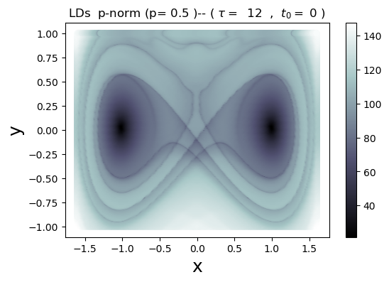
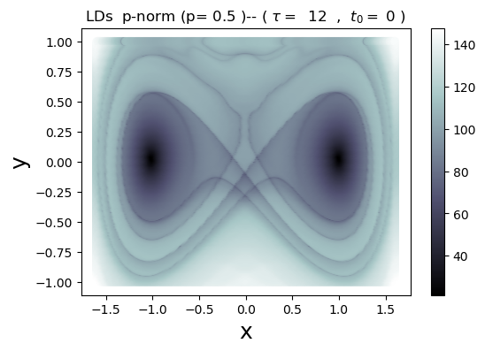

Computing the Lagrangian Descriptors of Nonlinear Dynamical Systems¶
Basic setup¶
BEFORE running this Notebook we assume the following
This notebook runs with Python Version
>= 3condasi up-to-date. If not, in the terminal (Linux/Mac) or theConda Prompt(Windows)
conda update --all
If you’re running this notebook and it works fine. That’s good news!
If you get error, please, try the proposed instructions in the next Subsection.
Package requirements¶
IMPORTANT
DO RUN the following lines, only if the current Notebook doesn’t execute properly.
DON’T RUN the following lines, if
requirements.txtalready satisfied or if Notebook runs fine.
If pip not installed within conda environment, execute the cell below
conda install pip==20.0.2
NOTE Wait for the above cell to finish executing before executing the next cell.
Install package dependencies
pip install -r requeriments.txt
Functions¶
NOTE: For testing, execute all the cells below before executing/modifying all the benchmark examples.
import numpy as np
import matplotlib.pyplot as plt
from scipy.integrate import solve_ivp as integrator # RK45 (default)
INPUT PARAMETERS
###################################
# Integration parameters
t0 = 0
tau = 12
dt = 0.1
###################################
# Lagrangian descriptor parameters
p_norm = 1/2
flag_m = True
###################################
# Mesh parameters
x_min,x_max = [-1.6, 1.6]
y_min,y_max = [-1, 1]
Nx, Ny = [300, 300]
GRID_PARAMETERS = [(x_min, x_max, Nx), (y_min, y_max, Ny)]
dim = 2
shape = (Nx*Ny, dim)
###################################
# Time Dependent Perurbation (for Hamilton Duffing)
flag_pert = 1;
perturbation_params = [0.15, 0.5]
def generate_points(GRID_PARAMETERS):
x_min, x_max, Nx = GRID_PARAMETERS[0]
y_min, y_max, Ny = GRID_PARAMETERS[1]
points_x = np.linspace(x_min, x_max, Nx)
points_y = np.linspace(y_min, y_max, Ny)
Y, X = np.meshgrid(points_y, points_x) # Grid in phase-space
mesh = np.transpose([X.flatten(), Y.flatten()]) # 2D grid
return mesh
Turn phase-space vector field to high-dimensional vector field
def vector_field_flat(t, points, vector_field):
u = points.reshape(shape)
v = vector_field(t, u)
return v.flatten()
This function substitutes previous accumulating function, which has a more neat defintion.
def lagrangian_descriptor(points_final, p_norm = 0.5, flag_m = True):
points_difference = points_final[1:] - points_final[:-1]
if flag_m: # p-norm LDs
LD_rows = np.sum(np.abs(points_difference)**p_norm, axis=2)
LD = np.sum(LD_rows, axis=0)
else: # arclength LDs
LD_rows = np.sqrt(np.sum((points_final)**2),axis=2)
LD = np.sum(LD_rows, axis=0)
return LD
What about flag_m?
Vladi’s comments
Avoid integrating all trajectories at once, to implement variable time or parallelisation
See other online comments in function below
def compute_lagrangian_descriptor(points_initial, vector_field, time_interval, dt, norm = False):
f = vector_field_flat # issue: defined as global function, independently of vector_field argument
t_initial, t_final = time_interval
if (t_final - t_initial)*dt < 0:
dt = -dt
y0 = points_initial.flatten() # All initial conditions taken at once
t_evaluation = np.arange(t_initial, t_final + dt, dt) # Sequence of time-points for integration
# Outputs from integration
solution_object = integrator(f, time_interval, y0, t_eval=t_evaluation, args=(vector_field, )) #f and vector_field ambiguity needs fixing
points_final = solution_object.y.T
points_final = points_final.reshape((len(t_evaluation),shape[0], shape[1]))
# Compute LD
LD = lagrangian_descriptor(points_final)
return LD
def draw_lagrangian_descriptor(LD, flag_m, flag_type):
LD = LD.reshape(Nx, Ny).T # Reshape 1D array
# LD = LD / LD.max() # Scale LD output
###################################
# Plot LDs
fig,ax = plt.subplots(1,1,dpi=100)
points_x = np.linspace(x_min, x_max, Nx)
points_y = np.linspace(y_min, y_max, Ny)
X, Y = np.meshgrid(points_x, points_y)
scatter = plt.scatter(X,Y,c=LD,cmap='bone')
###################################
# Customise appearance
if flag_m:
str_meth = ' '.join(['p-norm (p=',str(p_norm),')--'])
else:
str_meth = 'arclength --'
if flag_type == 1:
string_title = ['Forward LDs ', str_meth, '(','$\\tau=$ ',str(tau),' , ','$t_0=$',str(t0),')']
elif flag_type == 2:
string_title = ['Backward LDs ', str_meth, '(','$\\tau=$ ',str(tau),' , ','$t_0=$',str(t0),')']
else:
string_title = ['LDs ', str_meth, '(','$\\tau=$ ',str(tau),' , ','$t_0=$',str(t0),')']
string_title = ' '.join(string_title)
ax.set_title(string_title, fontsize=12)
ax.set_xlabel('x', fontsize=18)
ax.set_ylabel('y', fontsize=18)
ax.set_aspect('auto')
fig.colorbar(scatter) # Add color bar
plt.show()
Benchmark examples¶
Vector fields¶
Define vector field \(f(x,y) = (f_1, f_2)\)
For for the Initial Value problem
\begin{align*} \dot{x} &= dx/dt = f_1(x,y)\ \dot{y} &= dy/dt = f_2(x,y) \end{align*}
with initial condition \((x_0, y_0) \in \mathbb{R}^2\) at time \(t_0 \geq 0\)
def HamCenter1D(t, u):
x, y = u.T
# Hamiltonian Model Parameter
omega = 1
v = np.array([ omega * y, - omega * x]).T
return v
def HamSaddle1D(t, u):
x, y = u.T
# Hamiltonian Model Parameter
lamda = 1
v = np.array([ lamda * y, lamda * x]).T
return v
def forcing(t, u, flag_pert, perturbation_params):
x, y = u.T
pert = np.zeros((len(x),1))
# Perturbation parameters
A, freq = perturbation_params # Amplitude and Frequency
if flag_pert == 1:
perturbation = A * np.sin(freq*t)
elif flag_pert == 2:
perturbation = A * np.sech(t) * np.sin(freq*t)
else:
perturbation = perturbation
return perturbation
def HamDuffing1D(t, u):
x, y = u.T
# Hamiltonian Model Parameter
perturbation = forcing(t, u, flag_pert, perturbation_params)
v = np.array([y, x - x**3 + perturbation]).T
return v
Input parameters¶
###################################
# Integration parameters
t0 = 0
tau = 12
dt = 0.1
###################################
# Lagrangian descriptor parameters
p_norm = 1/2
flag_m = True
###################################
# Mesh parameters
x_min,x_max = [-1.6, 1.6]
y_min,y_max = [-1, 1]
Nx, Ny = [300, 300]
GRID_PARAMETERS = [(x_min, x_max, Nx), (y_min, y_max, Ny)]
dim = 2
shape = (Nx*Ny, dim)
###################################
# Time Dependent Perurbation (for Hamilton Duffing)
flag_pert = 1;
perturbation_params = [0.15, 0.5]
Compute and Visualise¶
Hamilton Centre¶
initial_conditions = generate_points(GRID_PARAMETERS)
vector_field = HamCenter1D
time_interval = (t0, t0 + tau)
LD_forward = compute_lagrangian_descriptor(initial_conditions, vector_field, time_interval, dt)
draw_lagrangian_descriptor(LD_forward, True, 1)
time_interval = (t0, t0 - tau)
LD_backward = compute_lagrangian_descriptor(initial_conditions, vector_field, time_interval, dt)
draw_lagrangian_descriptor(LD_backward, True, 2)
LD_total = LD_forward + LD_backward
draw_lagrangian_descriptor(LD_total, True, 3)
Hamilton Saddle¶
initial_conditions = generate_points(GRID_PARAMETERS)
vector_field = HamSaddle1D
time_interval = (t0, t0 + tau)
LD_forward = compute_lagrangian_descriptor(initial_conditions, vector_field, time_interval, dt)
draw_lagrangian_descriptor(LD_forward, True, 1)
time_interval = (t0, t0 - tau)
LD_backward = compute_lagrangian_descriptor(initial_conditions, vector_field, time_interval, dt)
draw_lagrangian_descriptor(LD_backward, True, 2)
LD_total = LD_forward + LD_backward
draw_lagrangian_descriptor(LD_total, True, 3)
Hamilton Duffing¶
initial_conditions = generate_points(GRID_PARAMETERS)
vector_field = HamDuffing1D
time_interval = (t0, t0 + tau)
LD_forward = compute_lagrangian_descriptor(initial_conditions, vector_field, time_interval, dt)
draw_lagrangian_descriptor(LD_forward, True, 1)
time_interval = (t0, t0 - tau)
LD_backward = compute_lagrangian_descriptor(initial_conditions, vector_field, time_interval, dt)
draw_lagrangian_descriptor(LD_backward, True, 2)
LD_total = LD_forward + LD_backward
draw_lagrangian_descriptor(LD_total, True, 3)
 

Hamilton Saddle-Node (IN PROGRESS)¶
TO-DO Implement Variable Time Integration for systems like the HSN
def HamSN1D(t, u):
x, y = u.T
# Hamiltonian Model Parameter
v = np.array([ y, -x -x**2]).T
return v
###################################
# Integration parameters
t0 = 0 # Initial time
tau = 1.5 # Time-interval length
dt = 0.1 # Timestep
###################################
# Lagrangian descriptor parameters
p_norm = 1/2 # p-value of Lp norm
flag_m = True
###################################
# Grid parameters
x_min,x_max = [-1.5, 1] # Grid limits X-axis
y_min,y_max = [-1, 1] # Grid limits Y-axis
Nx, Ny = [300, 300] # Number of points per axis
GRID_PARAMETERS = [(x_min, x_max, Nx), (y_min, y_max, Ny)]
dim = 2 # Phase-space Dimension
shape = (Nx*Ny, dim) # Shape of array of grid-points
###################################
# Time Dependent Perurbation (for Hamilton Duffing)
flag_pert = 1
perturbation_params = [0.15, 0.5] # Amplitude & Frequency, periodic pertubation
initial_conditions = generate_points(GRID_PARAMETERS)
vector_field = HamSN1D
# Compute and draw forward LD
time_interval = (t0, t0 + tau)
LD_forward = compute_lagrangian_descriptor(initial_conditions, vector_field, time_interval, dt)
draw_lagrangian_descriptor(LD_forward, True, 1)
# Compute and draw backward LD
time_interval = (t0, t0 - tau)
LD_backward = compute_lagrangian_descriptor(initial_conditions, vector_field, time_interval, dt)
draw_lagrangian_descriptor(LD_backward, True, 2)
# Compute and draw total LD
LD_total = LD_forward + LD_backward
draw_lagrangian_descriptor(LD_total, True, 3)